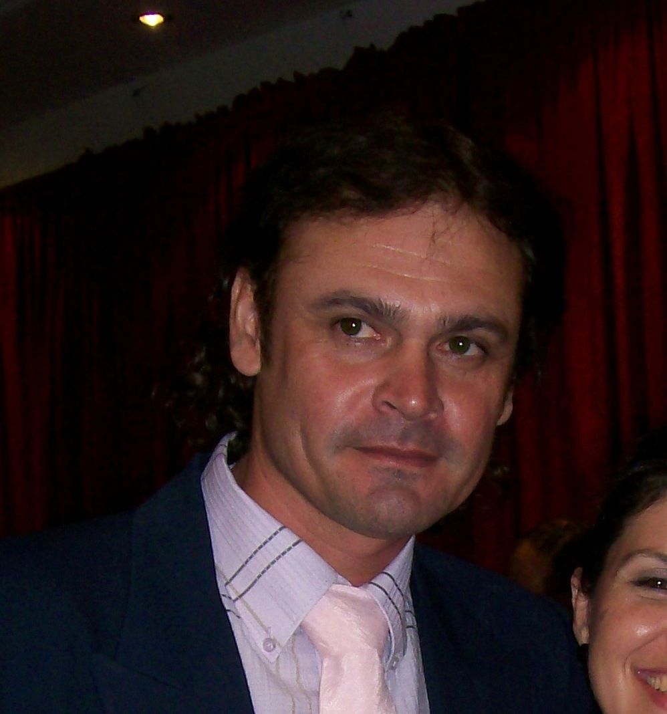

Hugo Ramon Monzon
Ricardo Guiraldes 556, Formosa , Argentina
Telefono: 3704-68-0905
Datos Generales
Fecha de nacimiento:
16/04/1966
Dni :
17774145
Cuit :
20-17774145-1
Email:
cashmonzonflow@gmail.com
Formacion Profesional
Nivel Secundario
Escuela Normal Nacional
Bibliotecologia:
Instituto Robustiano Martinez, Formosa
Operador pc:
Ministerio de la Comunidad,Gobierno de la Provincia de Formosa
Programacion Lenguajes:Blogstones,Ruby,Javascript:
Se programar ,Gobierno Nacional
Desarrollador Frontend:
Programa Nacional PROGRAMAR 4.0
Habilidades
Especialista en solución de problemas y trabajo en equipo.
Me adapto rapidamente a todo tipo de tareas en el sector.
Eficaz al momento de tomar decisiones
Experiencia Laboral
Programador con años de experiencia generando código para Varias empresas.
Creé el nuevo portal de ML, el cual recibe miles de visitas diarias.
Desarrollé una aplicación bancaria especializada en seguros de autos.
Responsable de crear un comparador de tarjetas de crédito que eleva las ventas.
Participé en más de 15 proyectos digitales.
Reduje el porcentaje de errores mensuales de la página de inicio del portal de la compañía ML